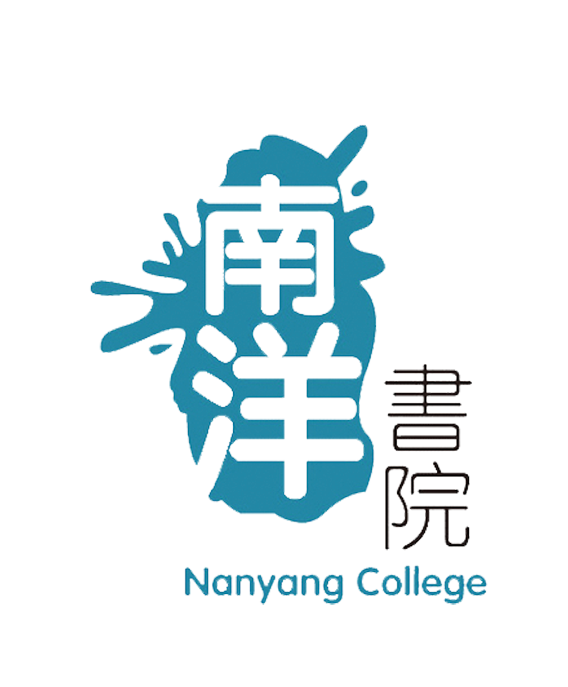
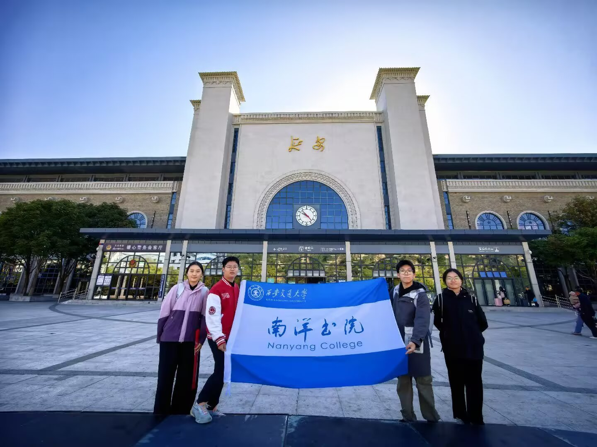
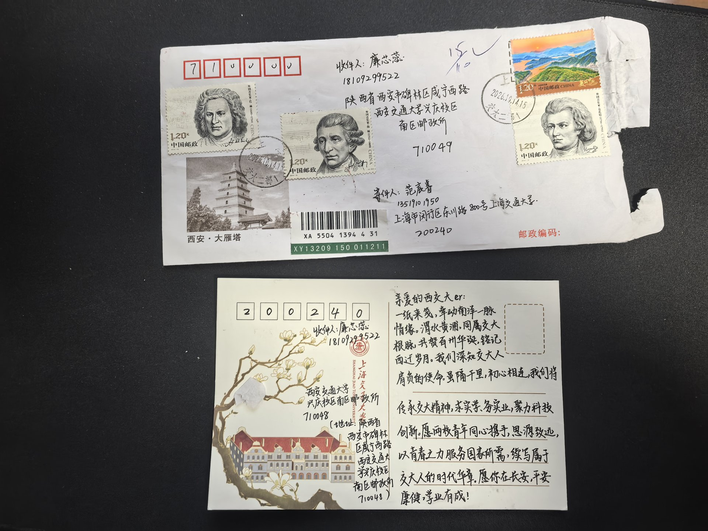
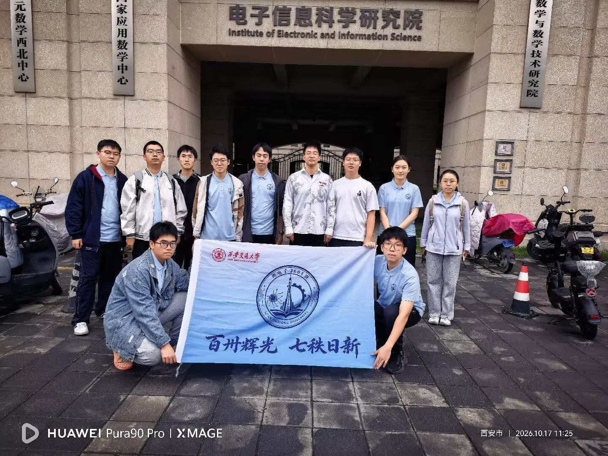
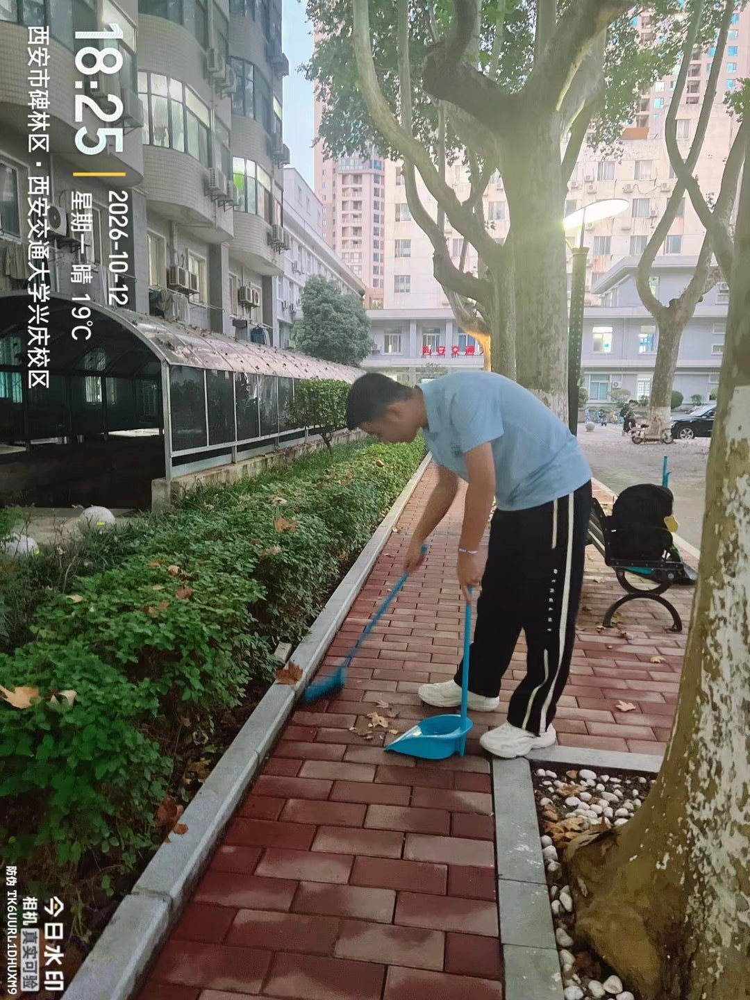

微电子2604班
2026年最佳团日
赓续百卅西迁薪火，青春建功挺膺新程
寻根共鸣强芯躬行
2026年微电子2604班最佳团日活动
赓续百卅西迁薪火青春建功挺膺新程
四篇章 · 23项活动
选择一张篇章卡片，开启其中的活动。
请启用 JavaScript 后开启互动展陈。
西安交通大学 · 南洋书院
将理论学习、校史研学、专业探索与日常实践联系起来。
寻根 · 共鸣 · 强芯 · 躬行